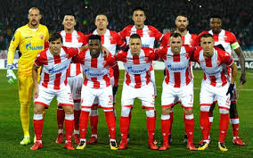
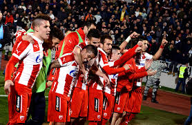
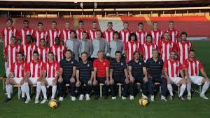
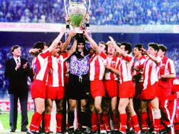

ФК Црвена звезда
ФК Црвена звезда је српски фудбалски клуб из Београда и део је СД Црвена звезда. Црвена звезда је најтрофејнији фудбалски клуб у Србији освојивши укупно 56 титула, укључујући 28 домаћих шампионата, 24 национална купа, два Митропа купа, један Куп шампиона и један Интерконтинентални куп. Највећи успех постигнут је 1991. године када осваја Куп европских шампиона у Барију и Интерконтинентални куп у Токију исте године. Било је то највеће достигнуће Црвене звезде и било ког српског, а тада и југословенског фудбалског клуба. Поред тог успеха у европским такмичењима, издваја се и финале Купа УЕФА 1979, где су поражени од Борусије из Менхенгладбаха.
Игра на свом стадиону који од 2014. носи име по легенди Црвене звезде Рајку Митићу, са капацитетом од 55.538 седећих места. Стадион је међу домаћом публиком познат као Маракана по називу истоименог стадиона у Бразилу, иако му то никад није био званичан назив. Према већини истраживања Црвена звезда је најпопуларнији клуб у Србији и Београду. Такође веома је популаран готово у свим суседним државама али и међу српском популацијом широм света. Клуб има дугогодишње ривалство са Партизаном. Од 2011. године постоји и женски клуб Црвене звезде.Док је Други светски рат још увек трајао, у ослобођеним деловима земље извршена је целокупна реорганизација спортског живота. Велики број предратних клубова је престао да постоји, те су уместо њих оснивани нови. Један од најпознатијих фудбалских клубова који је тада угашен била је београдска Југославија.
Током фебруара 1945. године омладинци, чланови Уједињеног савеза антифашистичке омладине Србије, почели су припреме за оснивачку скупштину једног омладинског фискултурног друштва, са циљем да буде састављено од разних спортских секција. У духу тог времена носило је назив Омладинско–фискултурно друштво (ОФД) које је 4. марта прерасло у Црвену звезду. Иницијатива за оснивање спортског друштва потекла је од Зорана Жујовића и Слободана Ћосића, а међу оснивачима су још били и Небојша Поповић, Светозар Глигорић, Мира Петровић и Милован Ћирић. Новооснованом клубу су тада припали стадион, и клупске просторије СК Југославије, а стицајем околности боја клуба је била иста као и боја клуба свеже угашене СК Југославије, али са тотално другачијим конотацијама. Црвена звезда нема никаквих додирних тачака са СК Југославијом те се не може сматрати никаквим наследником истог клуба, а главни разлог је чињеница да је Црвена звезда устројена према тзв. совјетском фискутлурном (спортском) моделу. Тим је добио име после дуге расправе између тадашњих потпредседника спортског друштва Слободана Ћосића и Зорана Жујовића. После бројних предлога (Младост, Ударник, Торпедо, Динамо, Локомотива итд.), најзад је Ћосић рекао: „Да наше друштво назовемо Звезда!“, на шта је Жујовић спонтано додао: „Одлично, само, кад је Звезда - нека буде црвена.“ Са овим предлогом сви присутни су се са задовољством сложили, мада је било предлога да се клуб назове и Плава звезда. Одређене су и боје: црвено-плаво-бело са белом петокраком звездом на црвеној подлози дреса. Прво руководство клуба су чинили Ђорђе Паљић који је био председник, Зоран Жујовић и Слободан Ћосић који су обављали функције потпредседника, Љубиша Секулић је био секретар, економ Предраг Ђајић, а вођа фудбалске секције је био Коста Томашевић.
Највећи успех Црвене звезде је везан за 1991. када је 29. маја у италијанској луци Бари постала први клуб из Југославије (тадашње СФРЈ) који је освојио наслов првака старог континента. Утакмица је играна на тада новом Стадиону Свети Никола који је изграђен за потребе Светског првенства у фудбалу које је одржано 1990. године. Након победе над Бајерном из Минхена, тим се у потпуности окренуо утакмици финала коју је Звезда играла против Француског шампиона Олимпика из Марсеља. Екипа је отпутовала у Италију недељу дана пре меча. Ово је омогућило да се тим спреми у миру и тишини. Од саме утакмице се очекивало да ће бити офанзивна зато што је Звезда за дотадашњих 8 утакмица дала 18 голова а Марсељ је постигао 20 голова на истом броју мечева. Међутим тренери оба тима су се одлучили за дефанзивну тактику.